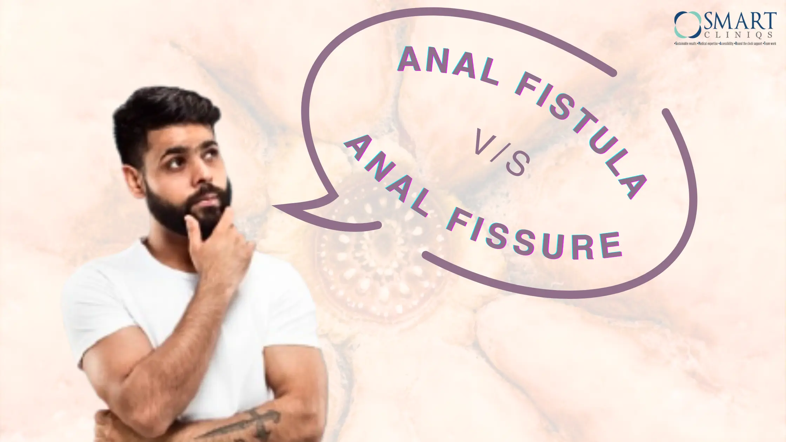

Anal Fistula v/s Fissure: What’s the Difference and How Are They Treated?
Anal fistulas and fissures are among the most common anorectal conditions. However, both conditions are merely distinguishable due to their similar symptoms. Therefore, it is a matter of utmost importance to understand the distinctions for accurate diagnosis and effective treatment.
An anal fistula is a small passage formed between the end of the bowel and the skin near the anus, usually caused by an infection. At the same time, anal fissure is a tear in the thin, moist tissue lining the anus. Here, in this blog, we will delve into the specifics of each condition in detail – their symptoms, causes, and the best possible treatment options and by the end of this blog, readers will be better equipped to identify their symptoms and seek proper medical care.
What is an Anal Fistula?
An anal fistula is characterized by a narrow tunnel or an abnormal passageway that develops between the anal canal and the skin located near the anus. It is a chronic condition that typically develops following an infection in the form of an abscess. The abscess can create a passage as it drains.
Symptoms of anal fistulas tend to be more severe than those of anal fissures, including persistent pain, swelling, and discharge. Anal fistulas may worsen if not addressed at the right time. In this process, they give rise to a variety of complications including recurrent infections as well as increased discomfort.
Common Causes of Anal Fistula
- Chronic infections in the anal glands: Leading to abscesses that progress to a fistula.
- Crohn's disease: This form of inflammatory bowel disease may give rise to several complications including anal fistula.
- Inflammatory bowel disease (IBD): Conditions like ulcerative colitis can raise the risk of fistulas.
- Trauma or prior surgery in the anal region: Results in an abnormal connection between the anal canal and the skin.
What is Anal Fissure?
An anal fissure is a small tear in the lining of the anus, often resulting from the passage of hard or large stools. Symptoms generally include sharp pain during bowel movements and bleeding. Unlike anal fistulas, fissures do not involve any abnormal passage and are usually easier to treat, often resolving with conservative measures.
Common Causes of Anal Fissures
The causes of anal fissure formation include:
- Chronic constipation or straining: Straining during bowel movements tends to cause tears in the anal lining.
- Hard or large stools: The pressure exerted by large stools can easily cause fissures.
- Trauma during childbirth: Women may develop fissures in the anal region due to pressure and trauma during childbirth.
- Dehydration or poor diet: A low-fibre diet leads to harder stools, which raise the risk of fissures.
Symptoms of Anal Fistula vs. Symptoms of Anal Fissure
Accurate medical diagnosis and treatment are essential for differentiating the symptoms of an anal fistula from those of an anal fissure.
Anal Fistula Symptoms
- Persistent pain, or irritation around the anus
- Pus or blood discharge from the area
- Swelling and redness near the fistula opening
- Frequent infections or abscesses in the anal region
- Fever, in some cases
Anal Fissure Symptoms:
- Sharp pain during and after bowel movements
- Bright red blood on toilet paper or in the stool
- A tear or crack in the skin around the anus that can be easily seen
- Itching, or irritation around the anus
- Spasms of the anal sphincter, causing further discomfort
Don’t Ignore the Signs of Anal Pain
Pay attention to the below-mentioned warning signs and seek medical advice immediately. Timely diagnosis can prevent complications linked to anal fistulas and fissures.
- Chronic persistent pain that does not improve, lasting for more than a week
- Inflammatory conditions or recurrent infections in the anal area
- Severe bleeding that may indicate a more serious underlying condition
Finding the Right Treatment for Anal Fistulas & Fissures
Various options are available for both treatments. Each option should be discussed with a healthcare provider to determine the most suitable approach based on the individual's condition and overall health.
| Anal Fistulas | Anal Fissure |
| Surgical Interventions: Most of the anal fistulas should be operated on. The common operations include: Fistulotomy: Involves cutting open the fistula to allow it to heal from the inside out. Seton Placement: A piece of thread called a seton is placed in the fistula. This allows fluid to drain out and facilitates natural healing. Advanced Laser Surgery: Laser surgery can prevent tissue damage around the anus | Surgical Interventions: For chronic fissures that do not respond to conservative treatment, Lateral Internal Sphincterotomy may be performed. This procedure involves cutting a small portion of the anal sphincter, which aids in reducing spasms as well as discomfort. |
| Minimally Invasive Techniques: Two techniques have recently emerged for quicker recovery and lesser post-operative morbidity: Video-Assisted Anal Fistula Treatment (VAAFT) & Laser Treatment. | Non-Invasive Therapies: Stool Softeners: These can reduce straining efforts during bowel movement. Increased Fibre Intake: Helps in softening stools. Topical Medications: Creams or ointments can provide pain relief and promote healing. |
There are several available treatment options; we simply need to determine the right one so that healthcare providers can intervene timely.
Why Laser Treatment is the Preferred Choice for Anal Fistulas?
Anal fistulas can be a painful and challenging condition to manage, but advances in medical technology have introduced effective treatment options. Among these, laser treatment stands out as the most recommended solution for several compelling reasons:
- Minimally invasive: Laser surgery usually requires fewer and smaller incisions compared to open surgery, resulting in less trauma to surrounding tissue.
- Faster recovery: Patients often experience quicker recovery times and can return to normal, day-to-day activities sooner.
- Lesser post-op complications: Laser treatment reduces the possibility of complications like infection.
- Lesser pain: Many patients report minimal or reduced pain after laser surgery as compared to traditional surgical procedures.
Conclusion
In the realm of anorectal health, anal fistulas and fissures are two common yet distinct conditions that can significantly impact a patient’s quality of life. Understanding the differences between these two is not only essential for formulating an accurate treatment plan but also crucial in leveraging advancements in medical technology, such as laser treatment options.
Suffering from anal fistulas or fissures? Consult the best Anorectal Surgeon in Delhi for expert diagnosis and advanced treatments for anal fistulas and fissures. Schedule your appointment today!
Back to Blog